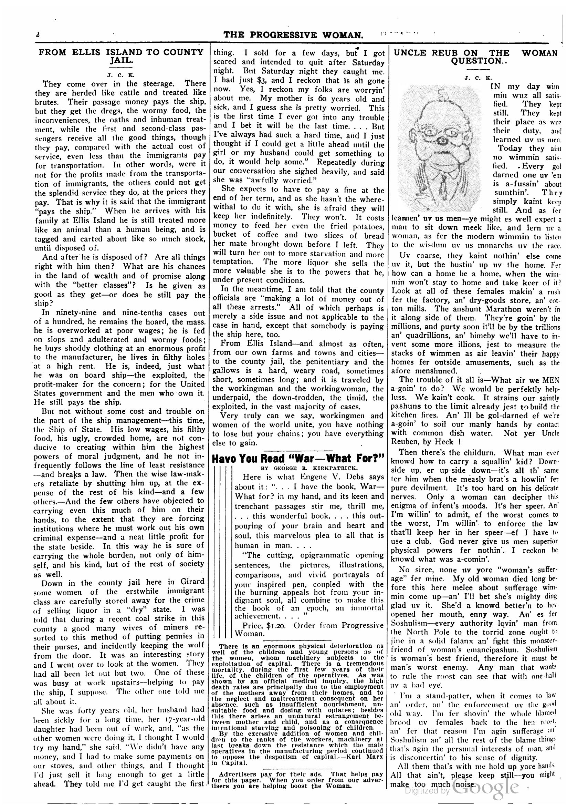
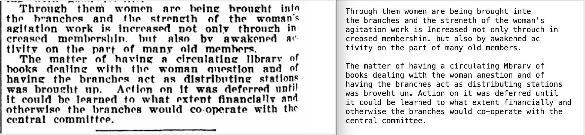
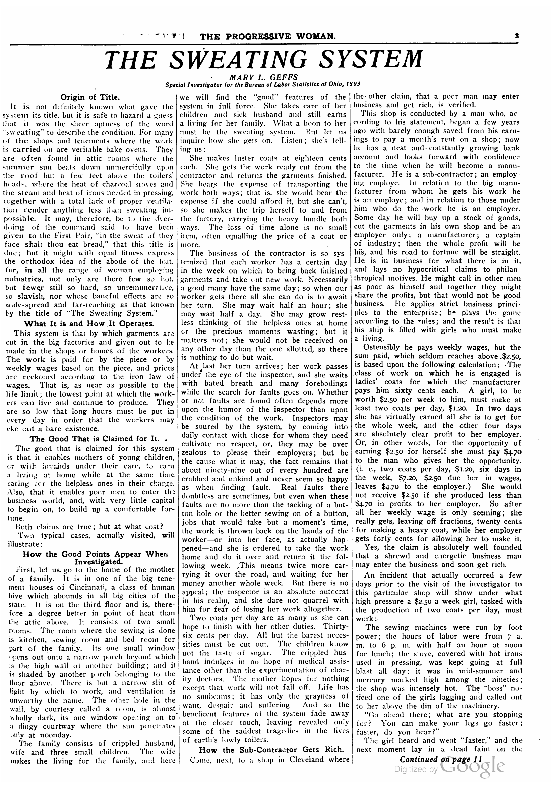

Install the required packages¶
%conda install -c conda-forge pdf2image tesseract poppler
%pip install pyocr
%conda install poppler
Collecting package metadata (current_repodata.json): done
Solving environment: done
## Package Plan ##
environment location: /Users/nealcaren/opt/anaconda3/envs/recipes
added / updated specs:
- poppler
The following packages will be downloaded:
package | build
---------------------------|-----------------
certifi-2020.11.8 | py38hecd8cb5_0 148 KB
openssl-1.1.1h | haf1e3a3_0 2.2 MB
pixman-0.40.0 | haf1e3a3_0 340 KB
poppler-0.81.0 | h2ef9dbd_1 1.4 MB
------------------------------------------------------------
Total: 4.0 MB
The following NEW packages will be INSTALLED:
cairo pkgs/main/osx-64::cairo-1.14.12-hc4e6be7_4
curl pkgs/main/osx-64::curl-7.71.1-hb0a8c7a_1
fontconfig pkgs/main/osx-64::fontconfig-2.13.0-h5d5b041_1
gettext pkgs/main/osx-64::gettext-0.19.8.1-hb0f4f8b_2
glib pkgs/main/osx-64::glib-2.66.1-h9bbe63b_0
krb5 pkgs/main/osx-64::krb5-1.18.2-h75d18d8_0
libcurl pkgs/main/osx-64::libcurl-7.71.1-h8a08a2b_1
libedit pkgs/main/osx-64::libedit-3.1.20191231-h1de35cc_1
libssh2 pkgs/main/osx-64::libssh2-1.9.0-ha12b0ac_1
pcre pkgs/main/osx-64::pcre-8.44-hb1e8313_0
pixman pkgs/main/osx-64::pixman-0.40.0-haf1e3a3_0
poppler pkgs/main/osx-64::poppler-0.81.0-h2ef9dbd_1
poppler-data pkgs/main/osx-64::poppler-data-0.4.10-hecd8cb5_0
The following packages will be UPDATED:
libxml2 conda-forge::libxml2-2.9.10-h2c6e4a5_2 --> pkgs/main::libxml2-2.9.10-h7cdb67c_3
libxslt conda-forge::libxslt-1.1.33-h29b7fa6_1 --> pkgs/main::libxslt-1.1.34-h83b36ba_0
The following packages will be SUPERSEDED by a higher-priority channel:
ca-certificates conda-forge::ca-certificates-2020.11.~ --> pkgs/main::ca-certificates-2020.10.14-0
certifi conda-forge::certifi-2020.11.8-py38h5~ --> pkgs/main::certifi-2020.11.8-py38hecd8cb5_0
icu conda-forge::icu-67.1-hb1e8313_0 --> pkgs/main::icu-58.2-h0a44026_3
openssl conda-forge --> pkgs/main
Downloading and Extracting Packages
openssl-1.1.1h | 2.2 MB | ##################################### | 100%
pixman-0.40.0 | 340 KB | ##################################### | 100%
certifi-2020.11.8 | 148 KB | ##################################### | 100%
poppler-0.81.0 | 1.4 MB | ##################################### | 100%
Preparing transaction: done
Verifying transaction: done
Executing transaction: done
Note: you may need to restart the kernel to use updated packages.
Details about pdf2image
https://github.com/Belval/pdf2image
Datils about pyocr https://gitlab.gnome.org/World/OpenPaperwork/pyocr
from pdf2image import convert_from_path
flyer = convert_from_path('../data/NAWSA.pdf')
flyer[0]

from pyocr.tesseract import image_to_string
text = image_to_string(flyer[0])
print(text)
DO IT NOW!
GIVE THE VOTE TO THE WOMEN OF EVERY
STATE IN THE UNION BY
Federal Constitutional Amendment
BECAUSE—Woman suffrage is inevitable all the world
around; few deny it—why should the United States delay?
BECAUSE—Great Britain and Canada have already enfran-
chised the women of their nations within a year, and the
women of Finland, Norway, Denmark, Iceland, Australia
and New Zealand had suffrage on equal terms with men
before our country entered the war. What the neutrals
and our allies have done in war time, our Republic can do.
BECAUSE—A “100 per cent American’ Republic cannot logic-
ally deny to oe women the political Pabeity that mon-
archies have extended.
BECAUSE—AII political parties have endorsed the Federal
Suffrage Amendment either in platforms adopted by na-
tional conventions or by action of their national com-
mittees.
BECAUSE—The edebennient which asks the women of the
country to give their all to win a war for democracy
abroad, cannot consistently deny them the vote, the sym-
bol of democracy, at home.
BECAUSE—The woman suffrage movement is a part of the
great struggle of the world contest for fundamental hu-
man freedom, and until the amendment is ratified by the
legislatures of the states the suffrage campaign must and
will go on.
SUPPORT THE FEDERAL SUFFRAGE AMENDMENT
NATIONAL AMERICAN WOMAN SUFFRAGE ASSOCIATION
171 Madison Avenue 5 New York City
Printed July 1918
journal_pages = convert_from_path('../data/Progressive_Woman_Vol-4_Iss-42.pdf')
len(journal_pages)
16
journal_pages[1]

print(image_to_string(journal_pages[1]))
2
FROM ELLIS ISLAND TO COUNTY
JAIL.
Joc K.
They come over in the steerage. There
they are herded like cattle and treated like
brutes. Their passage money pays the ship,
but they get the dregs, the wormy food, the
inconveniences, the oaths and inhuman treat-
ment, while the first and second-class pas-
sengers receive all the good things, though
they pay, compared with the actual cost of
service, even less than the immigrants pay
for transportation. In other words, were it
not for the profits made from the transporta-
tion of immigrants, the others could not get
the splendid service they do, at the prices they
pay. That is why it is said that the immigrant
“pays the ship.” When he arrives with his
family at Ellis Island he is still treated more
like an animal than a human being, and is
tagged and carted about like so much stock,
until disposed of.
And after he is disposed of? Are all things
right with him then? What are his chances
in the land of wealth and of promise along
with the “better classes”? Is he given as
good as they get—or does he still pay the
ship?
In ninety-nine and nine-tenths cases out
of a hundred, he remains the hoard, the mass.
he is overworked at poor wages; he is fed
on slops and adulterated and wormy foods;
he buys shoddy clothing at an enormous profit
to the manufacturer, he lives in filthy holes
at a high rent. He is, indeed, just what
he was on board ship—the exploited, the
profit-maker for the concern; for the United
States government and the men who own it.
He still pays the ship.
But not without some cost and trouble on
the part of the ship management—this time,
the Ship of State. His low wages, his filthy
food, his ugly, crowded home, are not con-
ducive to creating within him the highest
powers of moral judgment, and he not in-
frequently follows the line of least resistance
—and breaks a law. Then the wise law-mak-
ers retaliate by shutting him up, at the ex-
pense of the rest of his kind—and a few
others.—And the few others have objected to
carrying even this much of him on their
hands, to the extent that they are forcing
institutions where he must work out his own
criminal expense—and a neat little profit for
the state beside. In this way he is sure of
carrying the whole burden, not only of him-
self, and his kind, but of the rest of society
as well.
Down in the county jail here in Girard
some women of the erstwhile immigrant
class are carefully stored away for the crime
of selling liquor in a “dry” state. I was
told that during a recent coal strike in this
county a good many wives of miners re-
sorted to this method of putting pennies in
their purses, and incidently keeping the wolf
from the door. It was an interesting story
and I went over to look at the women. ‘They
had all been let out but two. One of these
was busy at work upstairs—helping to pay
the ship, I suppose. The other one told me
all about it.
She was forty years old, her husband had
heen sickly for a long time, her 17-year-old
daughter had been out of work, and, “as the
other women were doing it, I thought I would
try my hand,” she said. “We didn’t have any
money, and I had tou make some payments on
our stoves, and other things, and I thought
I'd just sell it long enough to get a little
ahead. They told me I'd get caught the first !
THE PROGRESSIVE WOMAN. m
thing. I sold for a few days, but I got
scared and intended to quit after Saturday
night. But Saturday night they caught me.
I had just $3, and I reckon that is all gotie
now. Yes, I reckon my folks are worryin’
about me. My mother is 60 years old and
sick, and I guess she is pretty worried. This
is the first time I ever got into any trouble
and I bet it will be the last time... . But
I’ve always had such a hard time, and I just
thought if I could get a little ahead until the
girl or my husband could get something to
do, it would help some.” Repeatedly during
our conversation she sighed heavily, and said
she was “awfully worried.”
She expects to have to pay a fine at the
end of her term, and as she hasn’t the where-
withal to do it with, she is afraid they will
keep her indefinitely. They won't. It costs
money to feed her even the fried potatoes,
bucket of coffee and two slices of bread
her mate brought down before I left. They
will turn her out to more starvation and more
temptation. ‘The more liquor she sells the
more valuable she is to the powers that be,
under present conditions.
In the meantime, I am told that the county
officials are “making a lot of money out of
all these arrests.” All of which perhaps is
merely a side issue and not applicable to the
case in hand, except that somebody is paying
the ship here, too.
From Ellis Island—and almost as often,
from our own farms and towns and cities—
to the county jail, the penitentiary and the
gallows is a hard, weary road, sometimes
short, sometimes long; and it is traveled by
the workingman and the workingwoman, the
underpaid, the down-trodden, the timid, the
exploited, in the vast majority of cases.
Very truly can we say, workingmen and
women of the world unite, you have nothing
to lose but your chains; you have everything
else to gain.
Havo You Read “War—What For?”
BY GEORGE R. KIRKPATRICK.
Here is what Engene V. Debs says
about it: “. .. I have the book, War—
What for? in my hand, and its keen and
trenchant passages stir me, thrill me,
. .. this wonderful book, . . . this out-
pouring of your brain and heart and
soul, this marvelous plea to all that is
human in man... .
“The cutting, opigrammatic opening
sentences, the pictures, illustrations,
comparisons, and vivid portrayals of
your inspired pen, coupled with the
the burning appeals hot from your in-
dignant soul, all combine to make this
the book of an epoch, an immortal
achievement... . ”
Price, $1.20. Order from Progressive
Woman.
There is an enormous physical deterioration as
well of the children and young persons as of
the women, whom machinery subjects to the
exploitation of capital. There is a tremendous
mortality. during the first few years of their
life, of ‘the children of the operatives, As was
shown by an official medical inquiry, the high
death rates are principally due to the employment
of the mothers away from their hemes, and to
the neglect and maltreatment consequent on her
absence, such as insufficient nourishment, un-
suitable food and dosing with oplates; besides
this there arises an unnatural estrangement be-
tween mother and child, and as a_ consequence
intentional starving and poisoning of children.
By the excessive addition of women and chil-
dren to the ranks of the workers, machinery at
last breaks down the resistance which the male
operatives In the manufacturing perlod continued
to oppose the despotism of capital.-—Karl Marx
in Capital.
Advertisers pay for their ads. ‘Chat helps pay
for this paper. When you order from our adver-
{isers you are helping boost the Woman.
——————
UNCLE REUB ON THE WOMAN
QUESTION..
J.
c. K.
(N my day wim
min wuz all satis-
fied. They kept
still. They kept
their place as wuz
their duty, and
learned uv us men.
Today they ain
no wimmin. satis-
fied. .Every gol
darned one uv ’em
is a-fussin’ about
sumthin’. They
Gicrek simply kaint keep
* still, And as fer
learnen’ uv us men—ye might es well expect a
man to sit down meek like, and lern uv a
woman, as fer the modern wimmin to listen
to the wisdum uy us monarchs uv the race.
Uv coarse, they kaint nothin’ else come
uv it, but the bustin’ up uv the home. Fer
how can a home be a home, when the wim-
min won’t stay to home and take keer of it?
Look at all of these females makin’ a rush
fer the factory, an’ dry-goods store, an’ cot-
ton mills. The anshunt Marathon weren't in
it along side of them. They’re goin’ by the
millions, and purty soon it’ll be by the trillions
an’ quadrillions, an’ bimeby we’ll have to in-
vent some more illions, jest to measure the
stacks of wimmen as air leavin’ their happy
homes fer outside amusements, such as the
afore menshuned. 5
The trouble of it all is—What air we MEN
a-goin’ to do? We would be perfektly help-
luss. We kain’t cook. It strains our saintly
pashuns to the limit already jest to build the
kitchen fires. An’ Ill be gol-darned ef we're
a-goin’ to soil our manly hands by contact
with common dish water. Not yer Uncle
Reuben, by Heck !
Then there’s the childurn. What man ever
knowd how to carry a squallin’ kid? Down-
side up, er up-side down—it's all th’ same
ter him when the measly brat’s a howlin’ fer
pure devilment. It’s too hard on his delicate
nerves. Only a woman can decipher this
enigma of infent’s moods. It’s her speer. An’
I’m willin’ to admit, ef the worst comes to
the worst, I’m willin’. to enforce the law
that'll keep her in her speer—ef I have to
use a club, God never give us men superior
physical powers fer nothin’. I reckon he
knowd what was a-comin’.
No siree, none uv yore “woman's suffer-
age” fer mine. My old woman died long be-
fore this here melee about sufferage wim-
min come up—an’ I'll bet she’s mighty ding
glad uv it. She’d a knowd better'n to hev
opened her mouth, enny way. An’ es fer
Soshulism—every authority lovin’ man from
the North Pole to the torrid zone onght to
jine in a solid falanx an’ fight this monster-
friend of woman's emancipashun. Soshulism
is woman's best friend, therefore it must be
man’s worst enemy. Any man that wants
to rule the roost can see that with one half
uv a had eye.
I’m a stand-patter, when it comes to law
an’ order, an’ the enforcement uv the geod
old way. I'm fer shovin’ the whole blamed
brood uv females back to the hen roost.
an’ fer that reason I’m agin sufferage i”
Soshulism an’ all the rest of the blame thing
that's agin the persunal interests of man, and
is disconcertin’ to his sense of dignity.
All them that’s with me hold up yore hands
All that ain’t, please keep still—you might .
make too much (noise.

file_name = '../data/Progressive_Woman_Vol-4_Iss-42.pdf'
pages = convert_from_path(file_name)
pages = pages[:3]
contents = []
for n, page in enumerate(pages):
meta = {'text' : image_to_string(page),
'page_number' : n + 1,
'image' : page,
'fn' : file_name}
contents.append(meta)
import pandas as pd
df = pd.DataFrame(contents)
df.head()
| text | page_number | image | fn | |
|---|---|---|---|---|
| 0 | we\n\nStanford Liksssy «\nFOR THE WOMAN WHO WO... | 1 | <PIL.PpmImagePlugin.PpmImageFile image mode=RG... | ../data/Progressive_Woman_Vol-4_Iss-42.pdf |
| 1 | 2\n\n \n\nFROM ELLIS ISLAND TO COUNTY\nJAIL.\n... | 2 | <PIL.PpmImagePlugin.PpmImageFile image mode=RG... | ../data/Progressive_Woman_Vol-4_Iss-42.pdf |
| 2 | et\n\nTHE PROGRESSIVE WOMAN.\n\n \n\nTHE SWEAT... | 3 | <PIL.PpmImagePlugin.PpmImageFile image mode=RG... | ../data/Progressive_Woman_Vol-4_Iss-42.pdf |
df['image'][2]

df.to_json('pw.json')
df2 = pd.read_json('pw.json')
df2
| text | page_number | image | fn | |
|---|---|---|---|---|
| 0 | we\n\nStanford Liksssy «\nFOR THE WOMAN WHO WO... | 1 | {'category': 0, 'custom_mimetype': 'image/x-po... | ../data/Progressive_Woman_Vol-4_Iss-42.pdf |
| 1 | 2\n\n \n\nFROM ELLIS ISLAND TO COUNTY\nJAIL.\n... | 2 | {'category': 0, 'custom_mimetype': 'image/x-po... | ../data/Progressive_Woman_Vol-4_Iss-42.pdf |
| 2 | et\n\nTHE PROGRESSIVE WOMAN.\n\n \n\nTHE SWEAT... | 3 | {'category': 0, 'custom_mimetype': 'image/x-po... | ../data/Progressive_Woman_Vol-4_Iss-42.pdf |
df.to_pickle('pw.pickle')
df2 = pd.read_pickle('pw.pickle')
df2.head()
| text | page_number | image | fn | |
|---|---|---|---|---|
| 0 | we\n\nStanford Liksssy «\nFOR THE WOMAN WHO WO... | 1 | <PIL.PpmImagePlugin.PpmImageFile image mode=RG... | ../data/Progressive_Woman_Vol-4_Iss-42.pdf |
| 1 | 2\n\n \n\nFROM ELLIS ISLAND TO COUNTY\nJAIL.\n... | 2 | <PIL.PpmImagePlugin.PpmImageFile image mode=RG... | ../data/Progressive_Woman_Vol-4_Iss-42.pdf |
| 2 | et\n\nTHE PROGRESSIVE WOMAN.\n\n \n\nTHE SWEAT... | 3 | <PIL.PpmImagePlugin.PpmImageFile image mode=RG... | ../data/Progressive_Woman_Vol-4_Iss-42.pdf |
df2['image'][2]

from pdf2image import convert_from_path
from pyocr.tesseract import image_to_string
import pandas as pd
def pdf_ocr_df(file_name):
"""
OCR PDF returning a dataframe.
"""
pages = convert_from_path(file_name)
contents = []
for n, page in enumerate(pages):
meta = {
"text": image_to_string(page),
"page_number": n + 1,
"image": page,
"fn": file_name,
}
contents.append(meta)
return pd.DataFrame(contents)
df = pdf_ocr_df('../data/Mother-Earth_Vol-6_Iss-2.pdf')
df.head()
df['image'][6]
print(df['text'][6])